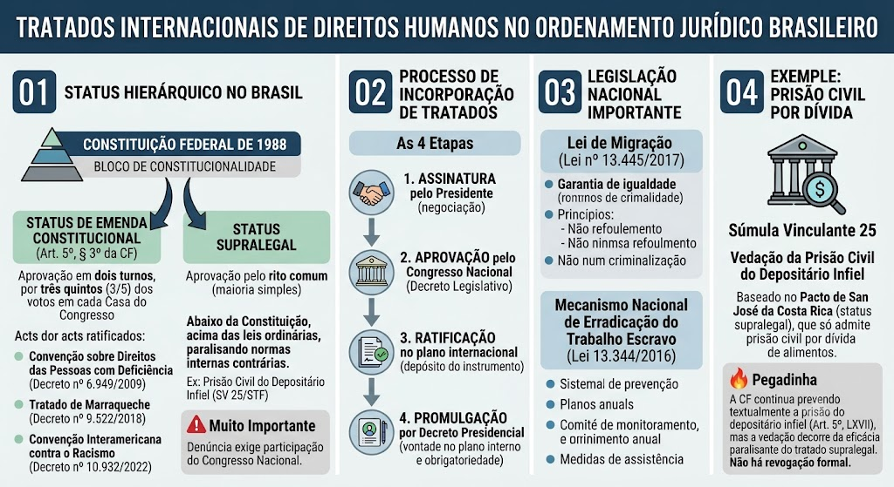

Art. 5º, § 3º da Constituição Federal
Art. 5º, § 3º da Constituição Federal
\"Os tratados e convenções internacionais sobre direitos humanos que forem aprovados, em cada Casa do Congresso Nacional, em dois turnos, por três quintos dos votos dos respectivos membros, serão equivalentes às emendas constitucionais.\"
Duas possibilidades
Duas possibilidades
Após a Emenda Constitucional nº 45/2004, um tratado de direitos humanos pode ter:
Posição do STF
Posição do STF
O Supremo Tribunal Federal fixou que tratados de direitos humanos não incorporados pelo rito especial possuem status supralegal: estão abaixo da Constituição, mas acima das leis ordinárias, paralisando a eficácia de normas internas que os contrariem (ex.: prisão civil do depositário infiel).
Bloco de Constitucionalidade
Bloco de Constitucionalidade
Conceito adotado pelo STF que inclui no parâmetro de controle de constitucionalidade não apenas o texto da Constituição de 1988, mas também os tratados de direitos humanos aprovados com status de emenda (rito do § 3º). Esses tratados integram o bloco de constitucionalidade e servem como paradigma para o controle concentrado.
Denúncia de tratados (desvinculação)
Denúncia de tratados (desvinculação)
O STF fixou o entendimento de que a denúncia (saída de um tratado) exige a participação do Congresso Nacional para produzir efeitos internos, em respeito ao princípio da simetria das formas. O Presidente da República não pode, sozinho, denunciar um tratado de direitos humanos sem aprovação legislativa.
As 4 etapas
As 4 etapas
Para que um tratado internacional vigore no Brasil, são necessários os seguintes passos:
Lei de Migração (Lei nº 13.445/2017)
Lei de Migração (Lei nº 13.445/2017)
Substituiu o antigo Estatuto do Estrangeiro. Garante aos migrantes direitos fundamentais em pé de igualdade com os nacionais, adota o princípio do non-refoulement (não devolução) e veda a criminalização da migração.
Mecanismo Nacional de Erradicação do Trabalho Escravo
Mecanismo Nacional de Erradicação do Trabalho Escravo
Instituído pela Lei 13.344/2016, que também trata do tráfico de pessoas. Cria o Sistema Nacional de Prevenção e Combate ao Trabalho Escravo, com planos anuais e comitês de monitoramento, além de prever medidas de assistência às vítimas.
Súmula Vinculante 25
Súmula Vinculante 25
Com base no status supralegal do Pacto de San José da Costa Rica (que só admite prisão civil por dívida de alimentos), o STF editou a Súmula Vinculante 25, vedando a prisão civil do depositário infiel, mesmo havendo previsão constitucional expressa no art. 5º, LXVII.
Atenção ao texto constitucional
Atenção ao texto constitucional
O art. 5º, LXVII, da CF continua prevendo textualmente a prisão do depositário infiel. A vedação decorre da eficácia paralisante do tratado supralegal sobre a legislação infraconstitucional que regulamentava essa prisão — não há revogação formal do dispositivo constitucional.
Atos internacionais aprovados pelo rito de emenda constitucional
Atos internacionais aprovados pelo rito de emenda constitucional
Atualmente, são 4 os atos internacionais aprovados pelo rito de emenda constitucional no Brasil:
Adoção e Vigência
Adoção e Vigência
Adotada em 1969 em San José, Costa Rica. Entrada em vigor internacional em 1978. O Brasil ratificou em 1992 (Decreto nº 678/1992) e reconheceu a jurisdição contenciosa da Corte IDH em 1998.
Objetivo
Objetivo
Proteger os direitos humanos no continente americano e responsabilizar internacionalmente os Estados por violações.
Direitos Protegidos
Comissão e Corte Interamericana
Comissão e Corte Interamericana
Comissão: recebe petições de vítimas, investiga violações e busca soluções amistosas.
Corte: julga violações, interpreta a Convenção; suas decisões são obrigatórias para os Estados-membros que reconheceram sua competência.
Procedimento de Denúncia
Caso emblemático: Maria da Penha
Caso emblemático: Maria da Penha
O Brasil foi responsabilizado por omissão na violência doméstica, o que originou a Lei 11.340/2006 (Lei Maria da Penha).
Pena de Morte na CADH
Pena de Morte na CADH
A CADH não proíbe totalmente a pena de morte, mas estabelece regras rígidas. Proibições absolutas: menores de 18 anos, maiores de 70 anos, mulheres grávidas, crimes políticos.
Regras para aplicação: apenas para crimes gravíssimos, lei anterior ao crime, após sentença final de tribunal justo e imparcial.
No Brasil, a CF/88 (Art. 5º, XLVII) só admite pena de morte em caso de guerra declarada, com execução por fuzilamento.
Proibições absolutas do Art. 5º da CADH
Proibições absolutas do Art. 5º da CADH
Tortura, tratamento cruel, desumano ou degradante — proibição absoluta, sem exceções, mesmo em guerra ou emergência nacional.
Finalidade da Pena
Finalidade da Pena
Reforma e ressocialização do condenado; a pena não deve servir como vingança. Princípio da intranscendência da pena (CF, Art. 5º, XLV): a pena não atinge terceiros.
Trabalho Forçado
Trabalho Forçado
Proibições absolutas: escravidão, servidão, tráfico de seres humanos, trabalho forçado (regra geral).
Exceções permitidas: trabalho de presos (com dignidade e para ressocialização), serviço militar obrigatório, serviços em calamidades públicas, obrigações cívicas normais.
No Brasil, presos trabalham de forma remunerada e podem obter redução de pena (remição), com objetivo de ressocialização.
Eficácia Vertical, Horizontal e Diagonal
Eficácia Vertical, Horizontal e Diagonal
Vertical: aplicação clássica entre indivíduo e Estado.
Horizontal: aplicação dos direitos humanos nas relações entre particulares (ex.: empresas, condomínios).
Diagonal: relações entre particulares com assimetria de poder (ex.: relação de trabalho).
Mínimo Existencial vs. Reserva do Possível
Mínimo Existencial vs. Reserva do Possível
Conflito entre a garantia das condições básicas de vida (mínimo existencial) e as limitações orçamentárias do Estado (reserva do possível). O mínimo existencial pode ser exigido judicialmente mesmo sem lei regulamentadora.
Princípio do Non-Refoulement (Não Devolução)
Princípio do Non-Refoulement (Não Devolução)
Proibição de devolver refugiados ou solicitantes de asilo a locais onde sua vida ou liberdade estejam ameaçadas.
Vedação do Retrocesso Social
Vedação do Retrocesso Social
Uma vez conquistado um direito social, o Estado não pode extingui-lo ou reduzi-lo sem uma alternativa equivalente (também chamado de efeito eclusa ou entrincheiramento).
Proibição do Excesso e Proteção Deficiente
Proibição do Excesso e Proteção Deficiente
O Estado não pode violar direitos ao punir (excesso), mas também não pode se omitir na proteção das vítimas (deficiência).
Hierarquia dos Tratados e Controle de Convencionalidade
Hierarquia dos Tratados e Controle de Convencionalidade
Status Constitucional: aprovados pelo rito do art. 5º, §3º (ex.: Convenção da ONU sobre Pessoas com Deficiência, Tratado de Marraqueche, Convenção Interamericana contra o Racismo).
Status Supralegal: aprovados pelo rito comum, abaixo da CF e acima das leis (ex.: CADH).
Controle de Convencionalidade: análise de compatibilidade entre as leis internas e os tratados internacionais ratificados.
Controle Difuso de Convencionalidade: análise de compatibilidade entre as normas internas e os tratados internacionais de direitos humanos, realizada por qualquer juiz em processo concreto (ex.: ação de habeas corpus, ação popular). Diferente do controle concentrado, o juiz verifica a convencionalidade caso a caso, sem necessidade de recurso ao STF. Se a lei interna for incompatível com o tratado, o juiz deve aplicar a norma internacional diretamente, com base no princípio da hierarquia dos normas e no status supralegal dos tratados.
Controle Concentrado de Convencionalidade: cabe ao STF (via Ação Direta de Inconstitucionalidade ou Arguição de Descumprimento de Preceito Fundamental), que analisa a constitucionalidade de leis à luz dos tratados de direitos humanos aprovados com status de emenda constitucional (integram o Bloco de Constitucionalidade).
Tratados importantes ratificados pelo Brasil
Proteção LGBTQIA+
Proteção LGBTQIA+
O STF criminalizou a homofobia e a transfobia, equiparando-as ao crime de racismo (ADO 26 e MI 4733).
Proteção a Povos Indígenas e Quilombolas
Proteção a Povos Indígenas e Quilombolas
Direito à demarcação de terras e à consulta prévia, livre e informada (Convenção 169 da OIT).
Mecanismo Nacional de Prevenção e Combate à Tortura
Mecanismo Nacional de Prevenção e Combate à Tortura
Criado pela Lei 12.847/2013 (MNPCT), com o objetivo de prevenir e combater a tortura no Brasil.
Jurisprudência do STF
Jurisprudência do STF
O STF tem se posicionado pela aplicação direta de tratados de direitos humanos, inclusive para anular leis infraconstitucionais contrárias, como no caso da prisão civil do depositário infiel, e para equiparar crimes de ódio a racismo.
Conceitos e diferenças
Conceitos e diferenças
A diferença entre Extradição e Entrega (Surrender) é uma das maiores pegadinhas de concurso!
Extradição: é um ato de cooperação jurídica internacional clássica entre Estados. No Brasil, a extradição de brasileiro nato é vedada pela Constituição (Art. 5º, LI, e Art. 12, § 1º).
Entrega (Surrender): é um mecanismo previsto no Estatuto de Roma (Art. 89 e seguintes), que permite a entrega de pessoas ao Tribunal Penal Internacional (TPI). O Brasil, ao ratificar o Estatuto de Roma, se comprometeu a cooperar com o TPI, inclusive entregando brasileiros natos ou naturalizados para julgamento por crimes de competência do tribunal (genocídio, crimes contra a humanidade, crimes de guerra e agressão). Isso é possível porque o Art. 5º, § 4º, da CF/88 expressamente autoriza a cooperação com o TPI.
📌 Pegadinha clássica: a proibição constitucional de extradição de brasileiro nato NÃO se aplica à entrega ao TPI. O Brasil pode entregar um brasileiro ao TPI para julgamento.
STF e Direitos Humanos
STF e Direitos Humanos
Bancas como FGV, Cebraspe e Vunesp adoram relacionar o tema com a eficácia dos direitos das minorias. Fique atento a estes marcos:
Mapa-mental
Material de estudo: Tratados Internacionais
Material complementar · Ver fonte no GitHub
Status hierárquico no Brasil
Duas possibilidades
Após a Emenda Constitucional nº 45/2004, um tratado de direitos humanos pode ter:
- Status de emenda constitucional, se aprovado pelo rito especial do § 3º (3/5, dois turnos, cada Casa)
- Status supralegal, se aprovado pelo rito comum (maioria simples) — entendimento consolidado pelo STF
Processo de Incorporação de Tratados
As 4 etapas
Para que um tratado internacional vigore no Brasil, são necessários os seguintes passos:
- 1. Assinatura pelo Presidente da República (negociação e adesão inicial).
- 2. Aprovação pelo Congresso Nacional, por meio de Decreto Legislativo (controle político).
- 3. Ratificação no plano internacional (depósito do instrumento de ratificação).
- 4. Promulgação por Decreto Presidencial no plano interno (início da vigência e obrigatoriedade no Brasil).
Tratados com status constitucional (Art. 5º, § 3º) — lista completa
Atos internacionais aprovados pelo rito de emenda constitucional
Atualmente, são 4 os atos internacionais aprovados pelo rito de emenda constitucional no Brasil:
- 1. Convenção sobre os Direitos das Pessoas com Deficiência (CDPD) e seu Protocolo Facultativo (Decreto nº 6.949/2009) — o primeiro tratado a ser aprovado com status de Emenda Constitucional no Brasil.
- 2. Tratado de Marraqueche para facilitar o acesso a obras publicadas às pessoas cegas/com deficiência visual (Decreto nº 9.522/2018).
- 3. Convenção Interamericana contra o Racismo, a Discriminação Racial e Formas Correlatas de Intolerância (Decreto nº 10.932/2022).
- 4. Convenção sobre a Eliminação de Todas as Formas de Discriminação contra a Mulher (CEDAW) e seu Protocolo Facultativo — aprovada pelo rito especial em 2024, tornando-se o quarto ato internacional com status de emenda constitucional no Brasil.
Principais tratados de direitos humanos ratificados pelo Brasil
- Pacto Internacional sobre Direitos Civis e Políticos (1966)
- Pacto Internacional sobre Direitos Econômicos, Sociais e Culturais (1966)
- Convenção Americana de Direitos Humanos — Pacto de San José da Costa Rica (1969)
- Convenção sobre os Direitos da Pessoa com Deficiência (2007) — aprovada pelo rito do § 3º, com status de emenda constitucional
- Convenção de Belém do Pará (1994) — violência contra a mulher
- Convenção contra a Tortura (ONU, 1984)
- Convenção Interamericana contra o Racismo (2017) — status constitucional
Convenção Americana de Direitos Humanos (Pacto de San José)
Direitos Protegidos
- Direito à vida (desde a concepção) — não absoluto, pois a CADH admite a pena de morte em países que não a aboliram, com restrições rigorosas (Art. 4º).
- Proibição de tortura — absoluta
- Proibição de escravidão — absoluta
- Direito à liberdade pessoal
- Garantias judiciais — devido processo legal
- Legalidade e retroatividade penal benéfica
- Honra e dignidade
- Liberdade de expressão
- Direito de reunião e associação
- Proteção judicial
Procedimento de Denúncia
- 1. Esgotamento dos recursos internos no país
- 2. Petição à Comissão Interamericana
- 3. Possível julgamento pela Corte
Outros Tratados e Proteção a Grupos Vulneráveis
Tratados importantes ratificados pelo Brasil
- Convenção de Belém do Pará (OEA, 1994): prevenção, punição e erradicação da violência contra a mulher.
- Convenção contra a Tortura (ONU, 1984): definição internacional de tortura e deveres dos Estados.
- Convenção sobre os Direitos das Pessoas com Deficiência (CDPD, ONU, 2006): primeiro tratado com status de emenda constitucional no Brasil.
- Convenção Interamericana contra o Racismo (2017): aprovada com status constitucional no Brasil.
Dica de Ouro – Jurisprudência do STF
STF e Direitos Humanos
Bancas como FGV, Cebraspe e Vunesp adoram relacionar o tema com a eficácia dos direitos das minorias. Fique atento a estes marcos:
- ADO 26 / MI 4733 — criminalização da homofobia e transfobia por equiparação ao crime de racismo.
- Súmula Vinculante 25 — vedação da prisão civil do depositário infiel (Pacto de San José).
- RE 466.343 — fixação do status supralegal dos tratados de DH aprovados pelo rito comum.
- Caso Gomes Lund (Guerrilha do Araguaia) — a Corte IDH afastou a Lei de Anistia; o STF, por sua vez, manteve a lei em julgamento de 2010 (ADPF 153), mas o debate segue vivo.
Mapa-mental
